Optional reading: McGinnis Chpt 1 pg 20–32, 39
Biomechanics is the study of the effects of internal and external forces on the human body in movement and rest.
Simply defined a force is a push or a pull.
Force is a vector quantity
Can cause a change in the state of motion of an object.
start, stop, speed up, slow down or change direction
Can either accelerate and/or deform an object
comes in pairs: action and reaction
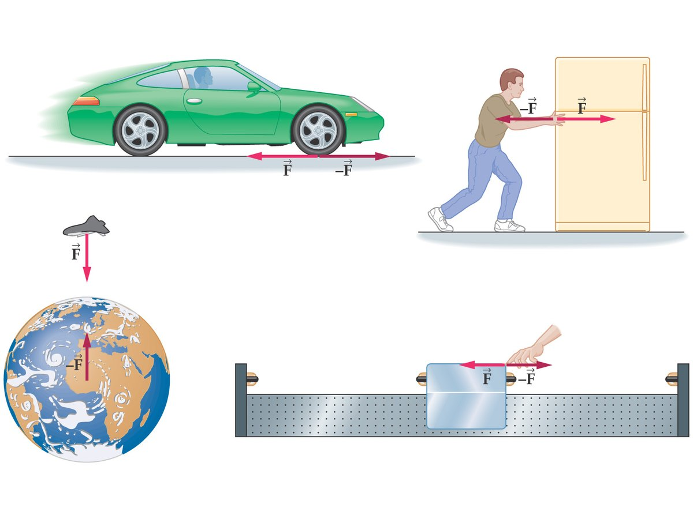
Some important points about force vectors
The Newton (N) is the SI unit of measurement for force. One N of force is defined as: the force required to accelerate a 1 kg mass at 1 m/s². 1 N = (1.0 kg)(1.0 m/s²)
The equation for force (F) is F = ma, where m is mass and a is acceleration.
Internal forces act within an object or system.
Compressive (pushing) and tensile (pulling) forces.
When you land from a jump there is a force from your lower leg on your upper leg through your knee and an equal and opposite force from your upper leg to your lower leg through your knee.
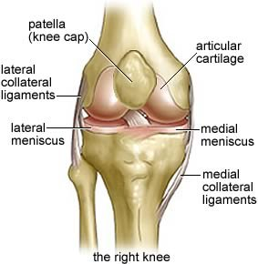
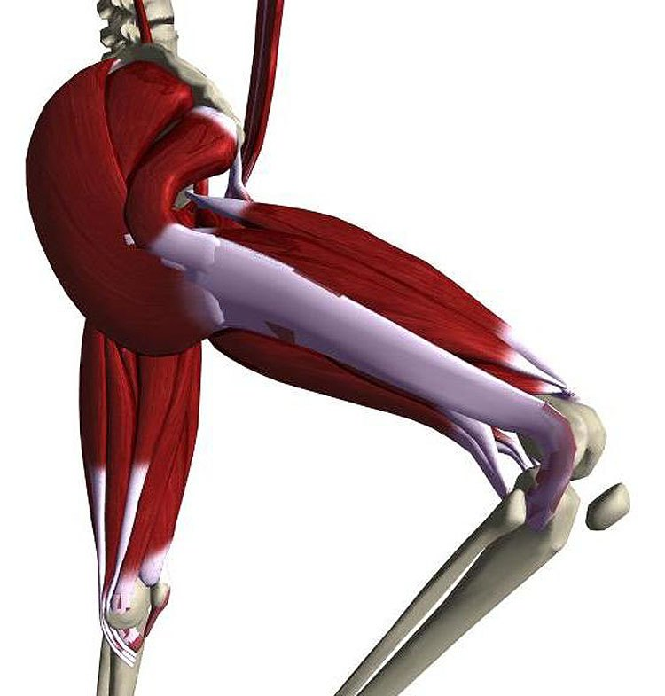
It is difficult to directly measure internal forces in human biomechanics.
An invasive option is to use strain gauges in cadaver limbs to conduct testing of injury occurrence and prevention.
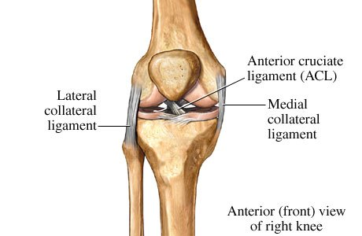
Strain gauge or optical fiber on/in human or animal tendon can be used to measure the magnitude of muscle forces.
But what about the direction?
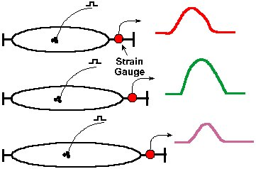
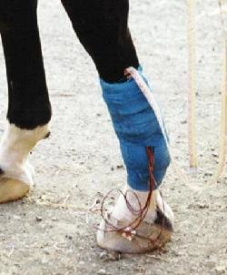
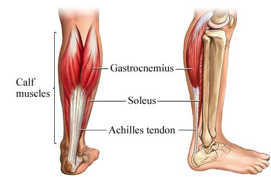
Step 1: Determine what the question is asking for · Step 2: Draw a diagram with all known values
Using fibre optic force measurement we have determined the muscle forces of the quadriceps during a squat. Find the resultant quadriceps muscle force given the individual muscle forces of vastus lateralis (VL), vastus intermedialis (VI) and vastus medialis (VM)
VL = 350 N 60°
VI = 450 N 80°
VM = 375 N 80°
Step 3: Isolate the forces and determine force components using trig functions
It is easiest to isolate each muscle force and then determine the separate components.
| horizontal | vertical | |
|---|---|---|
| VL 350 N at 60° | −175 N | 303 N |
| VI 450 N at 80° | −78.1 N | 443 N |
| VM 375 N at 80° | 65.1 N | 369 N |
Step 4: Add the respective force components to determine the resultant vector component
You could simply add the forces or use a table similar to when adding linear kinematic variables
Rx = Σ Horizontal Forces
= −175 N – 78.1 N + 65.1 N = −188.8 N
Ry = Σ Vertical Forces
= 303 N + 443 N + 369 N = 1115 N
Step 5: Solve for the resultant force magnitude and direction
R² = Rx² + Ry²
= −188.8² + 1115²
R = 1130.87 N
tan θ = Ry/Rx
θ = tan⁻¹ (Ry/Rx)
θ = tan⁻¹ (1115 / −188.8)
= −80.4
External forces
Forces that act on an object as a result of the surroundings.
Contact and non-contact.
Non-contact forces
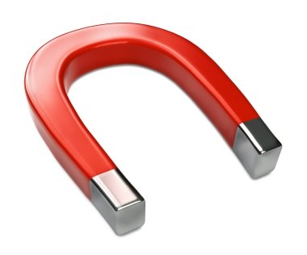
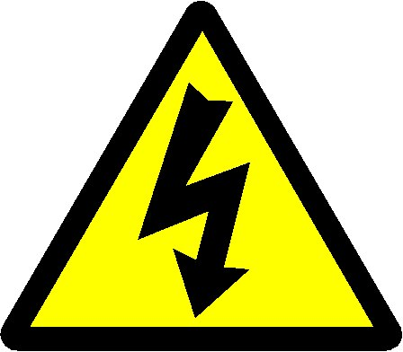
Contact forces
Occur between objects in contact with each other — solid or fluid. Air resistance and water resistance are fluid contact forces.
Occur in pairs: action and reaction.
The force of gravity acting on us causes us to contact the ground.
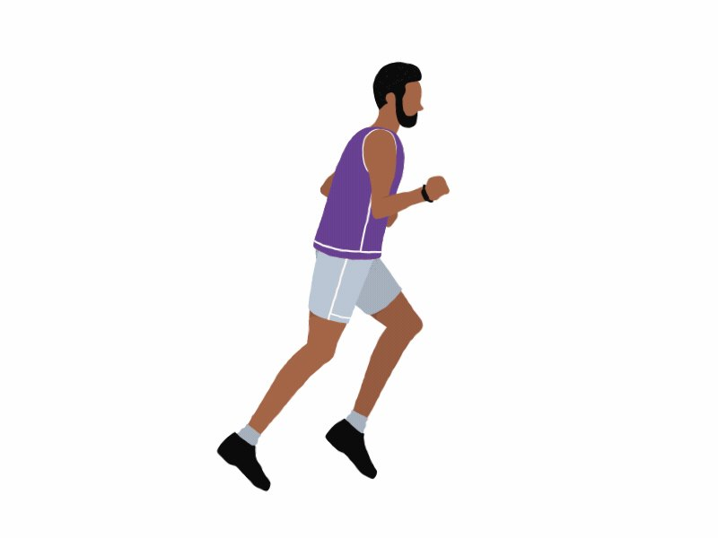
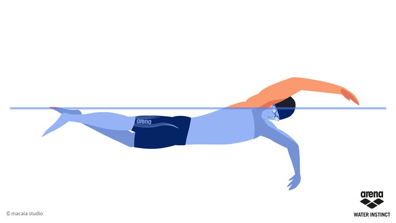
We experience gravity as weight.
All objects with mass have an attraction to other objects with mass. The magnitude of the attraction depends on the mass of each object and the distance between the two objects. The earth attracts someone and the person attracts the earth with an equal but opposite force.
We have a constant force acting on us pointed towards the centre of the earth acting through our centre of mass.
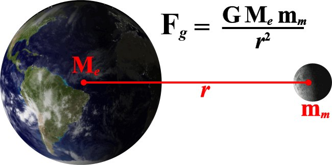
The weight of an object is defined as the force of gravity acting on an object. We know that the acceleration due to gravity is 9.81 m/s², and the equation for force is F = ma.
Therefore your weight (W) is equal to your body mass in kilograms (m) multiplied by the acceleration due to gravity (g = 9.81 m/s²), W = mg. What is your weight in Newtons?
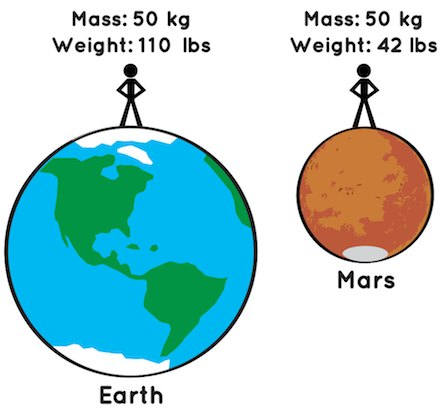
The force of gravity is acting towards the earth through our center.
This causes us to contact the ground and the ground must exert a force to hold us up just as we must exert muscular force to remain upright.
The component of the force of the ground acting on us perpendicular to the contact surface is called the normal force.
When we are on a surface parallel to the horizontal, the normal force is equal in magnitude to the force of gravity and opposite in direction….
When we or an object are on a slanted surface:
The force of gravity vector still points directly towards the centre of the earth but the normal force stays perpendicular to the contact surface and is no longer equal and opposite to the magnitude and direction of the force of gravity.
So how do we calculate the normal force?
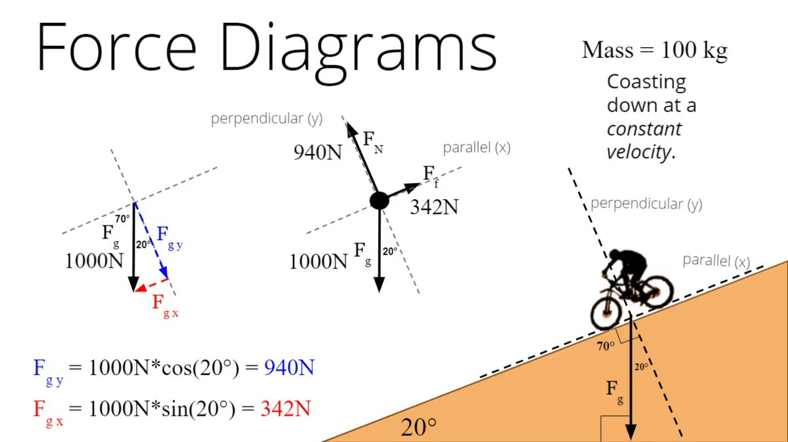
With contact forces it is customary to create an axis system that is parallel and perpendicular to the contact surface.
Then any forces acting in the system can be resolved into components that are:
The normal force is equal and opposite to the component of gravity force that is perpendicular to the contact surface.
What would happen to:
If we change the angle of the contact surface?
How to resolve for the components of force on a slant surface and solve for the normal force. We need to know the angle of the slant (20°) and the mass of the object (4 kg).
4th — solve for the parallel and perpendicular components of force.
Parallel component
Opposite = H·sin 20°
Opposite = 39.24 · sin 20°
Opposite = 13.42 N
Perpendicular component
adjacent = H·cos 20°
adjacent = 39.24 · cos 20°
adjacent = 36.87 N
In general there is a simple rule to determine the parallel and perpendicular components of force.
For any incline of a certain angle the parallel and perpendicular components of force will be:
parallel=mg sin θ
perpendicular=mg cos θ
Where mg is the equation for the weight of the object.
The parallel component of gravity will tend to pull the block down the surface…
Friction force is required to be equal and opposite of the parallel force or the block would slide down the slope.
Friction force is proportional to the normal force and acts perpendicular to it.
We will discuss more about friction in a following lecture.
When we move we exert force in all directions.
Both internal and external forces are resolved into components in reference to anatomical planes and axis systems.
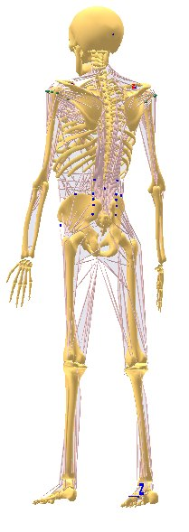
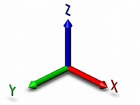
When considered in a sagittal plane: when we start to walk we exert a force that is not just acting down (z-axis) — part of the force is parallel to the surface (x-axis).
Also when considered in a frontal plane: part of the force is parallel to the surface acting along the y-axis.
An applied force will cause an object to deform and this deformation is measured and amplified by the electronics.
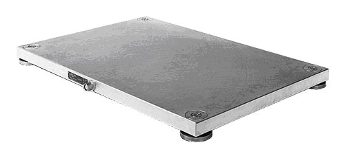
In many clinical settings force transducers are simple single axis devices.
A good example is a hand-held dynamometer. This device is used to determine:
Gold standard measurement of force in biomechanics is the forceplate and instrumented treadmill.
| Pro’s | Con’s |
|---|---|
| Accurate measure of ground reaction force | Difficult to use in the field |
| Reliable | Cannot measure foot pressure distribution |
| Multidimensional |
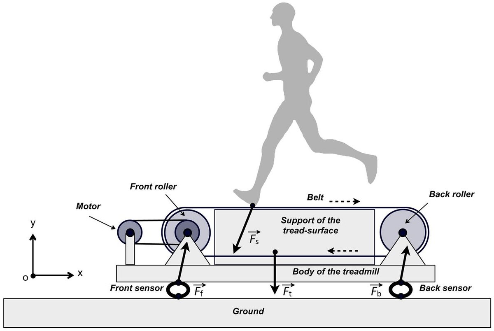
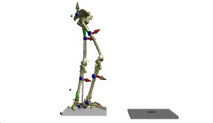
Often it is not feasible to directly measure external force but an inexpensive alternate is to measure pressure.
Pressure is the force per unit area directed perpendicular to an object surface: P = F/A
Most common pressure sensors measure pressure using the piezoresistive effect.
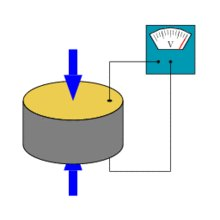
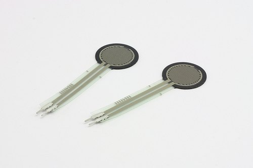
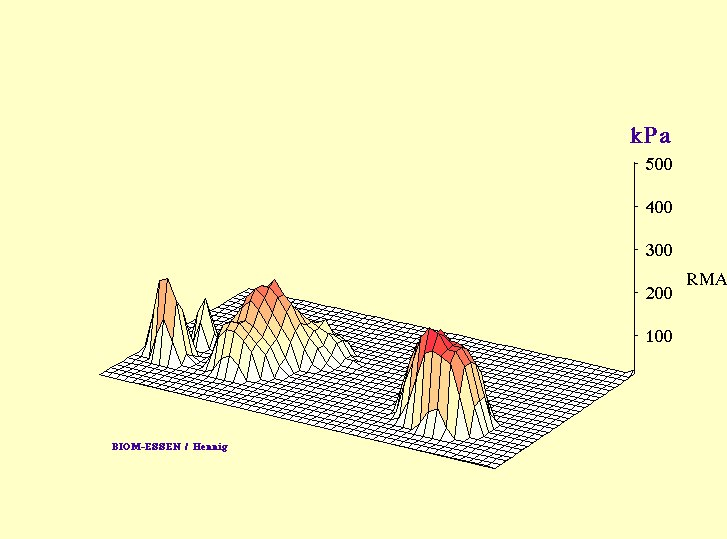
A common research and field based measure of foot loading is pressure sensing technology.
| Pro’s | Con’s |
|---|---|
| Portable, thin, flexible, lightweight | Unidimensional (vertical loading) |
| Approximation of force | Degree of precision, accuracy and reliability requires testing – refinement |
| Accurate for timing of foot loading | |
| Can measure foot pressure distribution while force plates cannot |
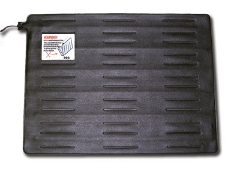
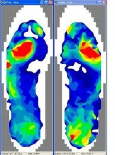
There are many insole plantar pressure measurement systems (PPMS).
These sensors help to provide the potential to measure external pressure (and calculate external force).
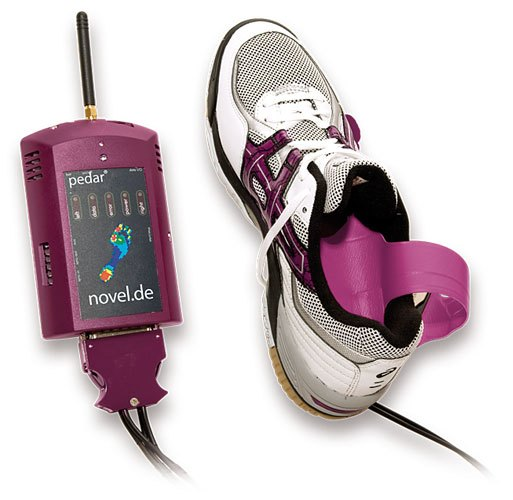
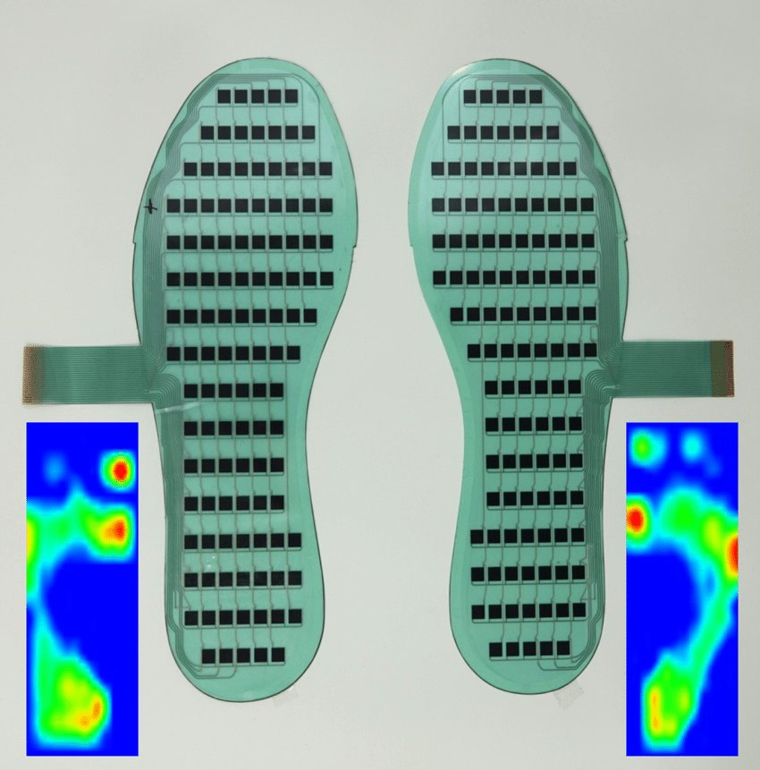
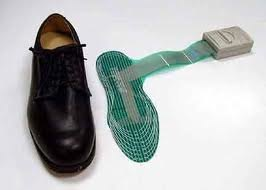
Centre of Pressure is the instantaneous point of application of the ground reaction force. Measuring foot centre of pressure movement during walking can tell us more information about the GRF vector and how we use our feet while walking.
PPMS can tell us similar information about COP as compared to force plates.
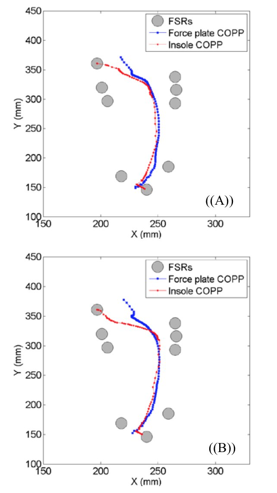
Instrumented devices
Force and pressure sensors can be added to mobility devices so that these objects become “instrumented” and we can measure the forces that individuals produce during activity.
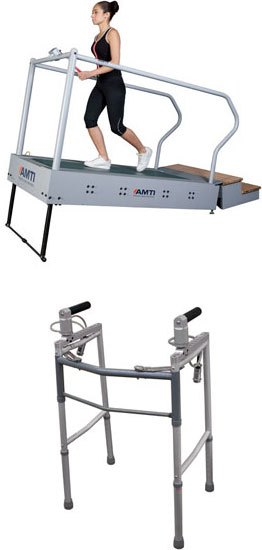
Force plate application
Foot strike patterns and collision forces in habitually barefoot versus shod
runners. Lieberman et al. Nature
nature.com/nature/journal/v463/n7280/pdf/nature08723.pdf
Slow motion with the vertical ground reaction force underneath.
Same runner, same heel strike, no shoe.
The forefoot lands first and the heel comes down afterwards.
A forefoot strike in a thin-soled racing flat.
Every style lands on about the same peak force. What separates them is the spike in the first 50 milliseconds — and how fast the load arrives.
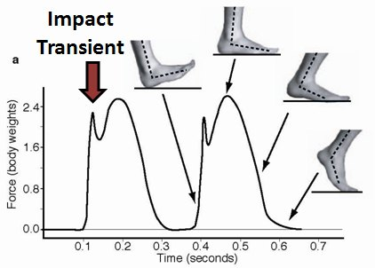
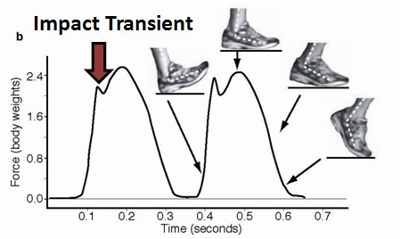
Lieberman et al., Nature 463, 531–535 (2010). The arrow marks the impact transient.
Daniel Lieberman
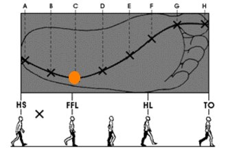
While force plates and pressure sensors can be used to measure external forces, it is difficult to measure the forces at the bones, joints and tendons directly.
But we can use different methods to approximate the internal forces:
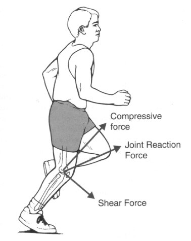
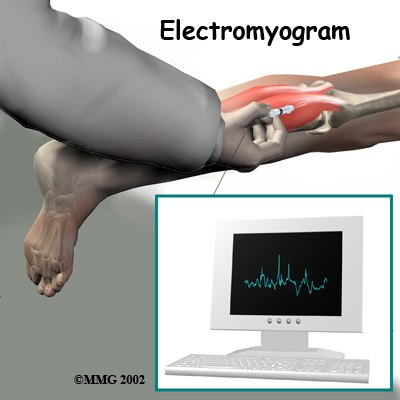